Scene 1Warm-Up
▶ Start hereHow your Wonder Films lessons work1-minute videoOpen ▾
🎯 TodayI can…
- explain what a case study is and why scientists use them.
- identify how a human action changed an ecosystem and affected organisms.
- describe a solution and explain why it might reduce harm to an ecosystem.

🔎 Mystery specimenWho is visiting, and what does it need?
What to do: Press Inspect specimen. Move the magnifying lens over the bee and the flower, then tap 3 things you notice.
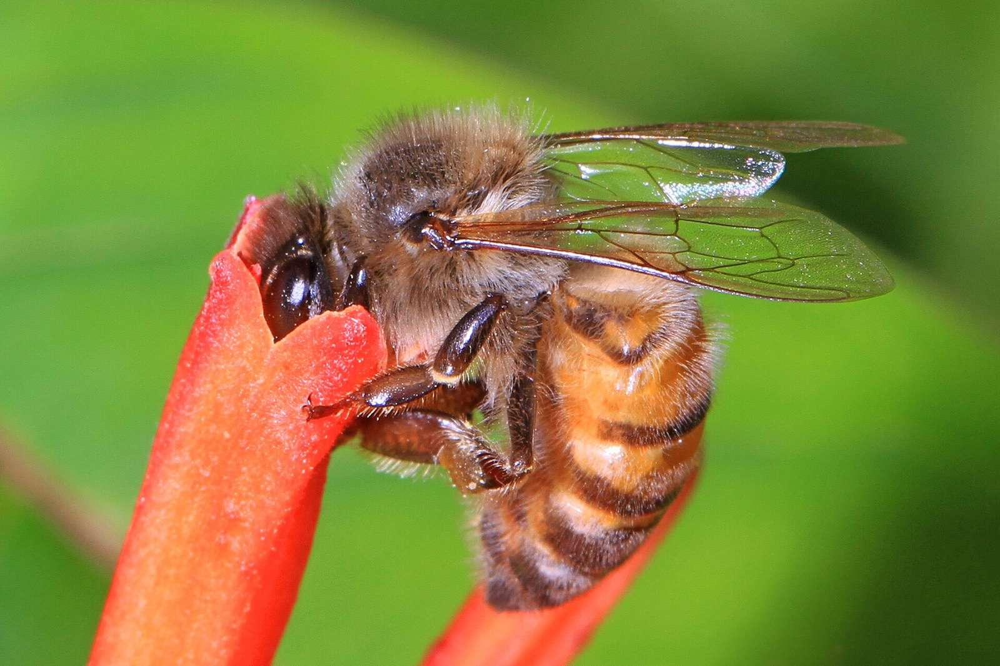
📚 Word WallWords scientists use
What to do: Tap or click each card to flip it and read what the word means. Tap 🔊 to hear the word.
Scene 2The Lesson
🔍 Part 1What Is a Case Study?
A case study is a close look at one real situation. Scientists pick one place, one event, or one ecosystem. They study it carefully to understand what changed and why. A case study asks: What happened here? What caused it? What might help?
Before: Tall grass and wildflowers. Bees drank nectar from the flowers. Rabbits hid in the tall grass. Birds nested nearby.
What changed: Half the meadow was paved for a parking lot.
After: Fewer flowers grew near the edge. Bees had less food. Rabbits had fewer places to hide. Some birds stopped nesting there.
Proposed solution: Plant a border of native wildflowers and grasses along the edge of the lot.
This meadow is an example, built from what scientists see in many real places.
🎞️ Put the scenes in orderHow did the meadow change?
What to do: Drag each photo into the film strip, from first to last. You can also tap a photo, then tap a frame. Get the order right and your strip becomes a movie.
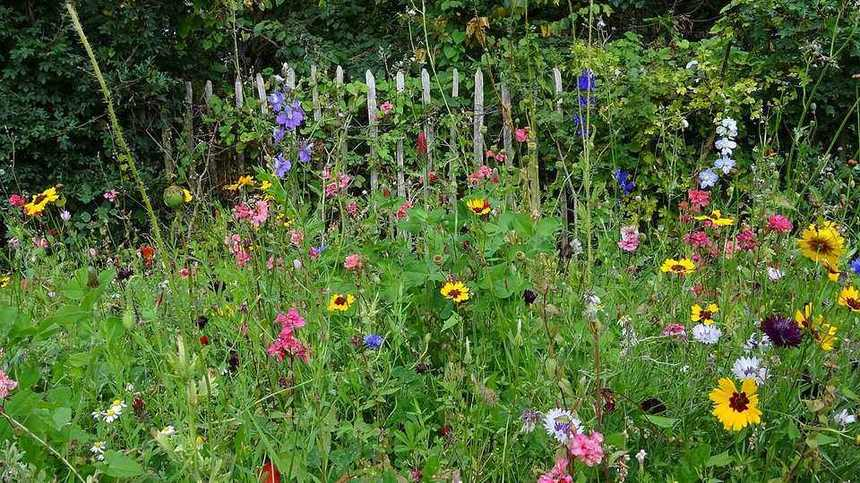
The rabbits lost their tall grass. Can't they just hop over and live somewhere else, so no harm done?
🏗️ Part 2When Humans Change a Place
People change ecosystems when they build, farm, travel, or throw things away. When a habitat changes, organisms may lose food, water, shelter, or space.
Then the population in that place can change. Some animals leave, some struggle, and some can't survive there at all.
🧪 The Hide TestCan a rabbit hide here?
What to do: Follow the steps one at a time. You will pick, test, and then explain.
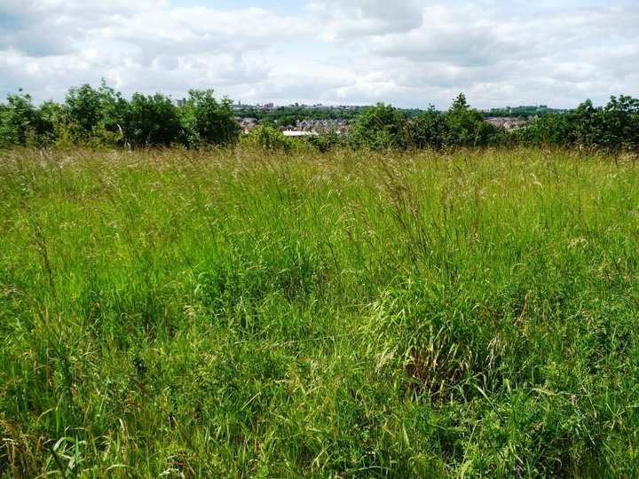
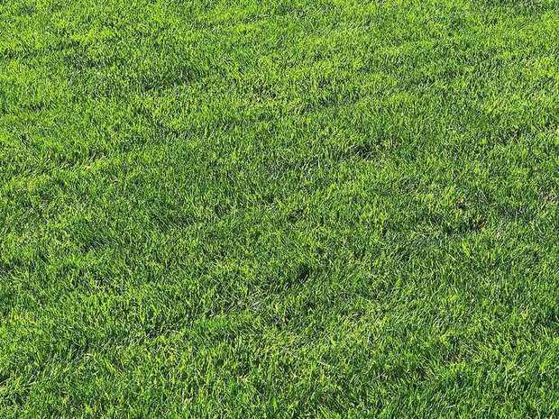
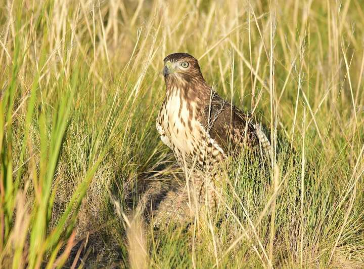
💡 Part 3Solutions Need Evidence
People can also design solutions that help an ecosystem recover. A good solution is based on evidence, not just guessing. It should reduce harm and help organisms find what they need again.
🚶 The edge walkWalk from the parking lot into the meadow
What to do: First, make a prediction. Then brush the glowing stop: drag across it (or tap it again and again) until the place shows.
As you walk from the parking lot into the meadow, what do you think happens to the number of living things?
lotThe
mowed edgeThe meadow
edgeDeep in the
meadow
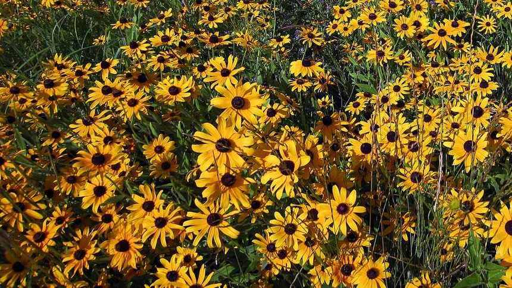
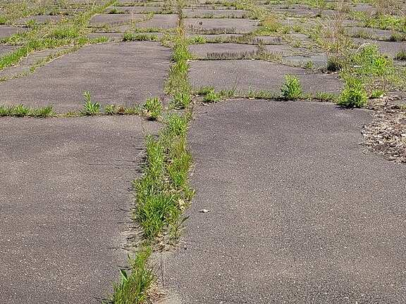
Stop 1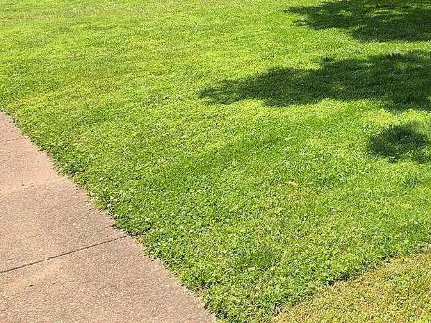
Stop 2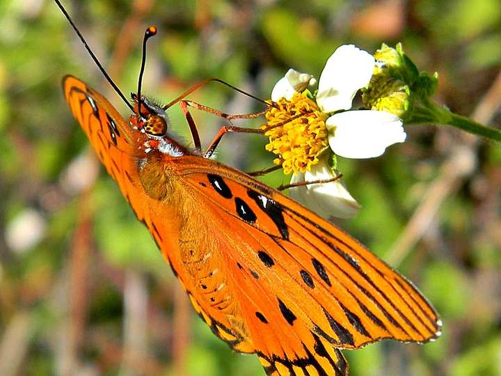
Stop 3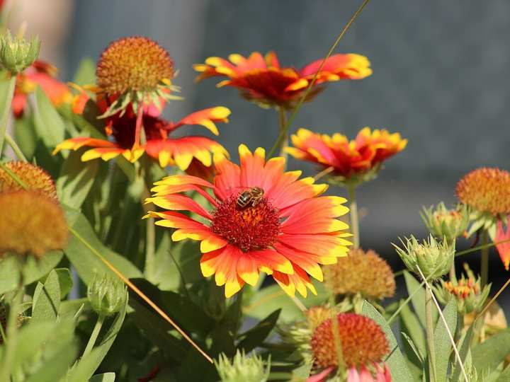
Stop 4The edge loses the most. When a meadow is paved, the part next to the lot gets fewer flowers, so bees and other animals find less food and shelter there.
The town plants a border of native wildflowers along the parking lot. Does that fix everything the meadow lost?
Roads that grow wildflowers
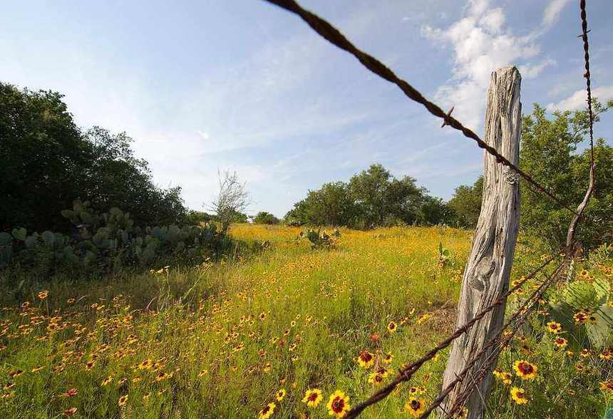
Some states use the land along highways as a giant flower border. Texas plants wildflowers beside its roads, and the state says it buys and sows about 30,000 pounds of wildflower seed every year.
Way back in 1934, Texas road crews were told to wait to mow until spring wildflowers were done blooming. Bees and butterflies use those roadside flowers for food.
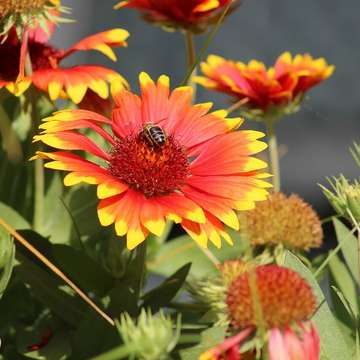
📁 Part 4Real Florida Cases: Which Fix Works?
What to do: Pick 3 case files, one at a time. Tap a clue, then pick what it lost. Predict which fix works, and watch the place today appear.
| Case | My observation | What it lost | The fix that works | My evidence |
|---|
🌍 Rebuild the placeUse your evidence to rebuild the place OPTIONALOpen ▾
What to do: Pick one you solved. Pick the place it points to, then pick the living things that belong there.
Pick one from your chart and explain it.
Start with: "Case __ shows…"
Scene 3Self-Check
What is a case study?
In the meadow case study, what resource did bees lose when part of the meadow was paved?
What makes a solution to an ecosystem problem stronger?
Scene 4Assignment
🔍 Part AIdentify and label
What to do: Read each one. Pick the best answer, or type your answer.
1. What human action changed the meadow?
2. Name one habitat change that happened after the parking lot was built.
3. Name two organisms that were affected and write what resource each one lost.
🚀 Part BShort answer
What to do: Answer in complete sentences. Use your science words.
1. How did the parking lot change the meadow ecosystem? Describe at least two things that were different after.
2. How were bees and rabbits affected in different ways? What does that tell you about how one human action can create more than one impact?
✍️ Write and explainIs planting native plants a good solution for the meadow?
What to do: Pick one from your evidence chart. Answer the three questions. Use at least one of the science words under the boxes.
Start with: "I think planting native plants is a good solution because…"
Start with: "I know this because in the case study, I observed that…"
Start with: "This makes sense because…"
🎨 Part CDraw and label
What to do: Draw the meadow before and after the parking lot. Label what changed, and one living thing that was affected.
🎬 Your question from Scene 1Can you answer it now?
What do you still wonder about? Write your question here. Then answer it.
📋 My answersEverything you wrote, in one place
(Your answers show up here as you write.)
How to turn in: Copy your answers and paste them into the Canvas assignment. Or download the file and upload it. Then press Save my drawing in Part C and upload your drawing too.
✅ Checklist
What to do: Tap each item when it is done. Items you finish on the page check themselves.
- My evidence chart has 3 cases and my explanation.
- Part A: all three questions.
- Part B: questions 1 and 2.
- Part C: my drawing and both labels.
- Write and explain, with at least one science word.
🎬 Premiere my case studyYour exhibit
What to do: Check your exhibit. Pick the one you wrote about, add your first name, then press Premiere film.
I observed…
It lost…
My evidence…
It tells us…
🎞️ This film's frames
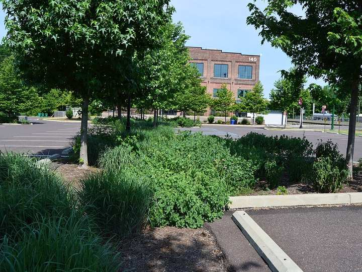
The case, step by step
The Hide Test
The edge walk
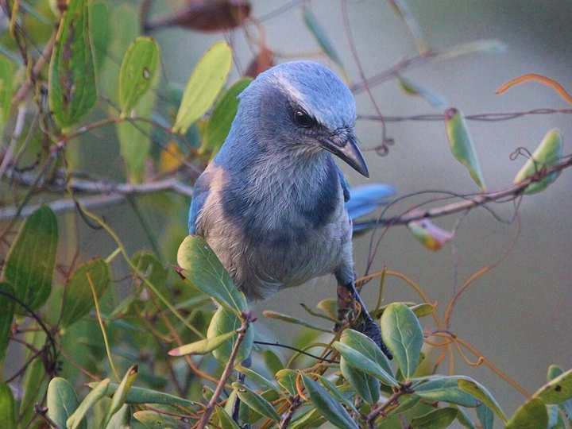
Which fix works?
Earn all four frames in the Lesson, then finish the checklist.
🔜 Coming up next23.01 · What Types of Pollution Harm Ecosystems?
Next time, find out how trash, dirty water, and dirty air harm the living things in an ecosystem.
Photo and music credits
- Eastern Meadowlark, Kissimmee, Florida 2, Alan Schmierer, CC0
- Apis mellifera on Gaillardia pulchella 009, Xavier Caré, CC BY-SA 3.0
- Florida Scrub-Jay perched, Sandhillcrane, CC BY-SA 4.0
- Ancient florida scrub lwr, Bill Lea, Public domain
- Burrowing owl, cape coral (24462742516), Russ, CC BY 2.0
- Burrowing owl, Marco Island, Florida - panoramio (6), olekinderhook, CC BY 3.0
- Gopher tortoise, Librarylady813, CC BY-SA 4.0
- Gopher tortoise burrow and habitat gopherus polyphemus, Pete Pattavina, U.S. Fish and Wildlife Service, Public domain
- First steps of hatchling of loggerhead sea turtle (Caretta caretta) running t…, Jean-Lou Justine, CC BY-SA 4.0
- First steps of hatchling of loggerhead sea turtle (Caretta caretta) running t…, Jean-Lou Justine, CC BY-SA 4.0
- Manatee bearing scars on back from boat propeller, Robert K. Bonde, U.S. Fish and Wildlife Service, Public domain
- Bair's Cove Kayak Trip - Flickr - Rusty Clark (2), Rusty Clark from merritt usland FLA, CC BY 2.0
- Parking lot at 330 Chestnut, East Longmeadow MA, John Phelan, CC BY 4.0
- 2022-06-09 12 22 34 A freshly mowed front lawn along Aquetong Lane in the Mou…, Famartin, CC BY-SA 4.0
- Blackeyed Susan Rudbeckia hirta calciferous meadow Peninsula State Park Wisco…, Joshua Mayer, CC BY-SA 2.0
- Coreopsis, Wichita Mountains Wildlife Refuge, U.S. Fish and Wildlife Service Headquarters, Public domain
- Black-eyed Susan (28388181005), U.S. Fish and Wildlife Service - Midwest Region, Public domain
- Juvenile red-tailed hawk at Seedskadee National Wildlife Refuge (50133472258), USFWS Mountain Prairie, Public domain
- Gulf Fritillary (Agraulis vanillae) (6745623119), Bob Peterson from North Palm Beach, Florida, Planet Earth!, CC BY-SA 2.0
- Apis mellifera on Gaillardia pulchella 018, Xavier Caré, CC BY-SA 3.0
- Flowers fill the landscape during Hill Country Springs. (24817555770), USDA NRCS Texas, Public domain
- Flowers fill the landscape during Hill Country Springs. (24745528149), USDA NRCS Texas, Public domain
- Norfolk Botanical Garden Meadow NBG LR, PumpkinSky, CC BY-SA 4.0
- Latvian and US Engineers Level Up Joint Capabilities (9094939), U.S. Air National Guard photo by Tech. Sgt. Bethany Rizor, Public domain
- Green Parking lot at the 140 College Drive Schuylkill Center, Montgomery County Planning Commission, CC BY-SA 2.0
- Eastern cottontail rabbit in grass, William R. James, U.S. Fish and Wildlife Service, Public domain
- Eastern Cottontail (Sylvilagus floridanus) (2564f316-e9da-48c2-9928-fb79c7637…, NPS Photo, Public domain
- Coronation Road border - Flickr - Phil Gayton, Phil Gayton from Totnes, UK, CC BY 2.0
- Honey Bee - Apis mellifera, Crocodile Lake, Judy Gallagher, CC BY 2.0
- Tall grass off Orchard Head Lane - geograph.org.uk - 2476076, Christine Johnstone, CC BY-SA 2.0
- 2021-04-20 11 22 52 Freshly mowed lawn along Glendundee Drive in the Chantill…, Famartin, CC BY-SA 4.0
- A common scene down a hill country highway. (24817548810), USDA NRCS Texas, Public domain
- Music: Nikolai Rimsky-Korsakov, Flight of the Bumblebee, played by the Strolling Strings of the United States Air Force Band, public domain (via Wikimedia Commons).
- Opti the owl: Optima Academy. Sound effects are made by the page. The film's meadow-to-parking-lot change is a story told with real photos from different places. The meadow movie, the Hide Test and the edge walk are models; every place photo is real. The four order photos come from different places. The Shrinking Meadow is an example case.